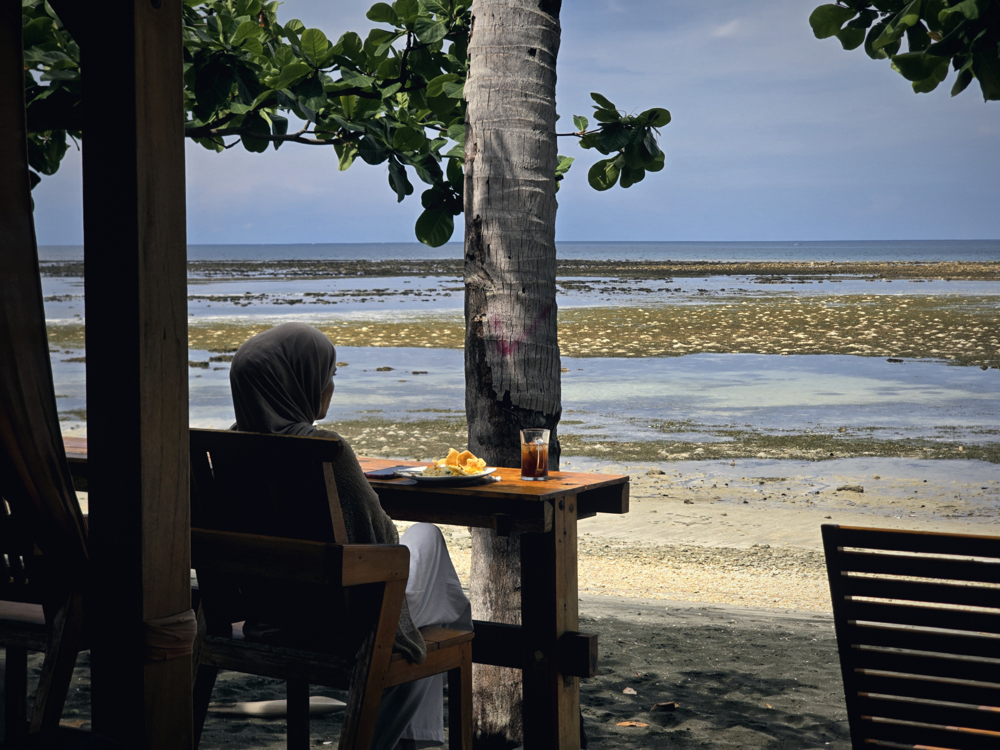

Carousel · Menari di SunaRi
6 rekomendasi color grading

1
Paling cocok
Sinematik Soft
Kontras lembut, bayangan teal, glow halus.
Cocok untuk: cerita memorial (dipakai kini)

2
Earthy Beige
Warna krem, selaras dengan hijab & outfit.
Cocok untuk: feed estetik yang seragam

3
Warm Film
Hangat keemasan, hitam matte, hijau zaitun.
Cocok untuk: nuansa nostalgia & liburan

4
Bright & Airy
Terang, pastel, putih bersih.
Cocok untuk: pagi segar & ceria

5
Teal & Orange
Laut teal, kulit & kayu oranye, tegas.
Cocok untuk: kesan film & dramatis

6
Dark Moody
Gelap, warna tenang, vignette.
Cocok untuk: suasana tenang & dalam